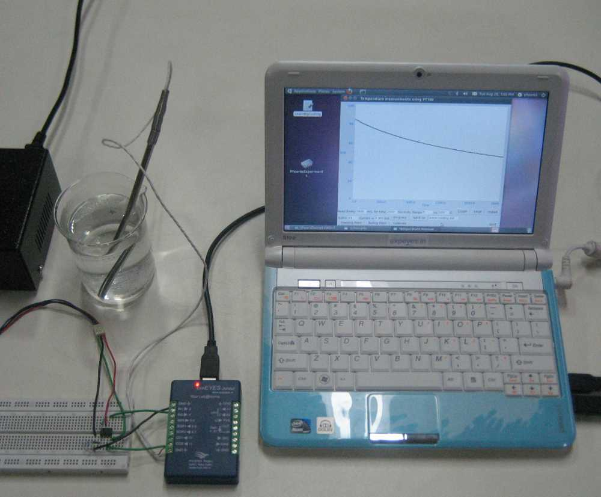

Temperature of cooling water is recorded as a function of time, using a PT100 temperature sensor. The experiment is repeated with coloured water, by adding some potassium permanganate. Resistance of PT100 sensor is a function of temperature. It is connected to a constant current source and the voltage drop is amplified and recorded.
